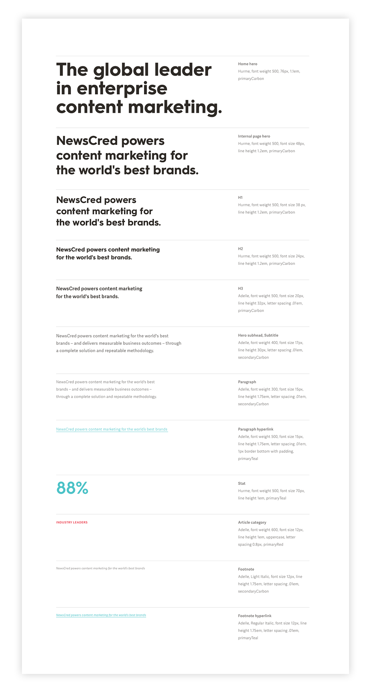

UI UX
I worked with the Leadership, Marketing, Product, and Customer Success Teams to redesign NewsCred's website framework and update all of its content.
The previous site was a result of urgent band-aid fixes and new pages that were added without consideration for the rest of the site. As a result, the site:
The Marketing team accomplished our goals: demonstrate content marketing expertise; improve the user journey to improve lead capture; establish a solid WordPress foundation that would allow for scalability and easy maintenance. We continue to use this framework today, which has greatly increased efficiency and speed for smaller updates.
